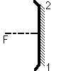
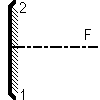

Cette page reprend l'aide d'OptGeo 3.03 (version pour ordinateur, à la souris). Dans la version web, on touche ou on clique au lieu de « cliquer deux fois » ; voir Utiliser OptGeo sur le web.
Miroir sphérique paraxial
(troué ou non)

ou
(concave ou convexe)Définition
Il est défini par les points 1 et 2 et le foyer F (ou la focale f'). L'ordre des points 1 et 2 est important, car il définit quelle est la face réfléchissante, l'autre étant absorbante, comme sur l'image ci-dessus.
Le miroir peut être ajouté :
- en cliquant sur le bouton de la barre d'outils ayant la forme ci-dessus, puis en faisant un clic simple pour saisir le premier point, puis en faisant un clic simple pour saisir le second (ne pas maintenir le bouton de la souris enfoncé entre les deux points), puis un dernier clic pour saisir la position du foyer
OU
- menu « Ajouter » puis « Système optique idéal » puis « Miroir sphérique concave » ou « Miroir sphérique convexe ». On donne alors les coordonnées des points 1 et 2, puis la valeur de la focale.
Options
On peut imposer
- que les hachures soient tracées ou non à l'écran
- que l'axe focal soit tracé ou non
- l'épaisseur et la couleur du trait représentant le miroir à l'écran
- la couleur du trait représentant l'axe focal à l'écran
On peut aussi choisir de trouer le miroir en son centre (pratique par exemple pour les télescopes de type Cassegrain).
Ces propriétés peuvent être rendues accessibles :
- à la construction du miroir si on passe par le menu « Ajouter »
- à tout instant en cliquant sur le bouton « Propriétés » de la barre d'outils, puis en cliquant sur un des cercles bleus qui apparaissent sur l'élément dont on veut obtenir les propriétés ; ne pas oublier à la fin de cliquer sur le bouton « Fin prop. » de la barre d'outils pour quitter le mode propriétés.
Divers
Comme le miroir est représenté à l'écran par son schéma conventionnel plan, les normales et angles ne peuvent être affichés sur sa surface. Comme c'est une idéalisation du miroir sphérique réel, les surfaces d'onde issues d'une source ponctuelle ou plane ne pourront être tracées si un tel miroir fait partie de la simulation.